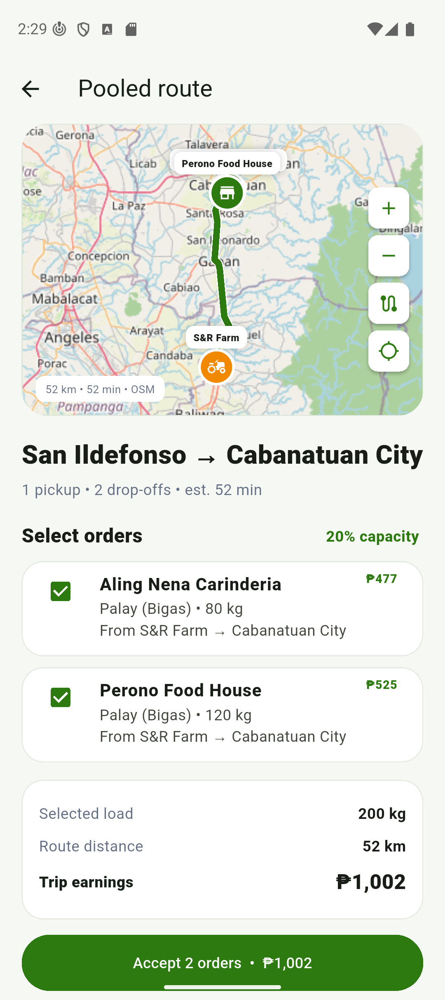
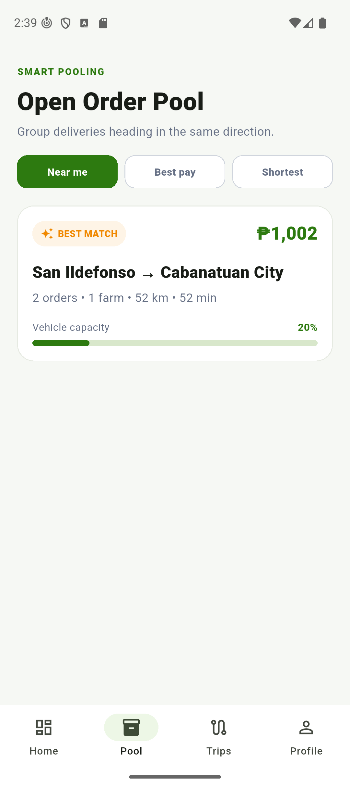
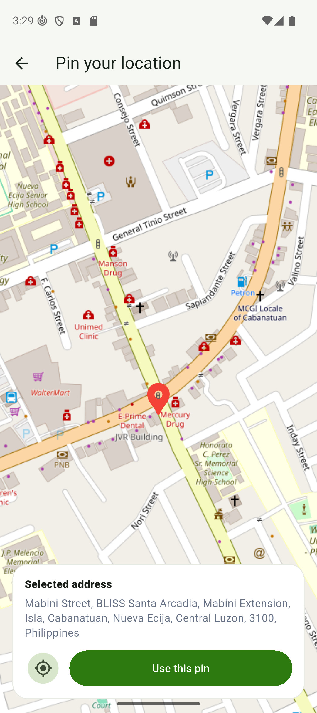
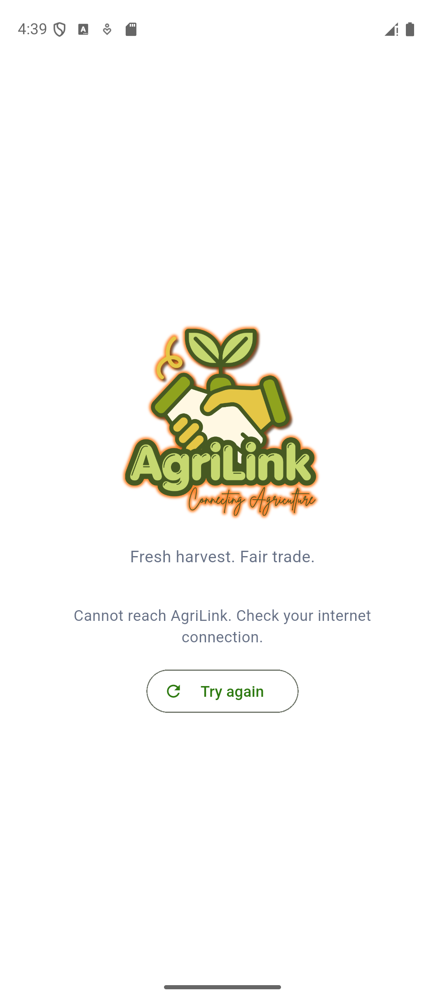
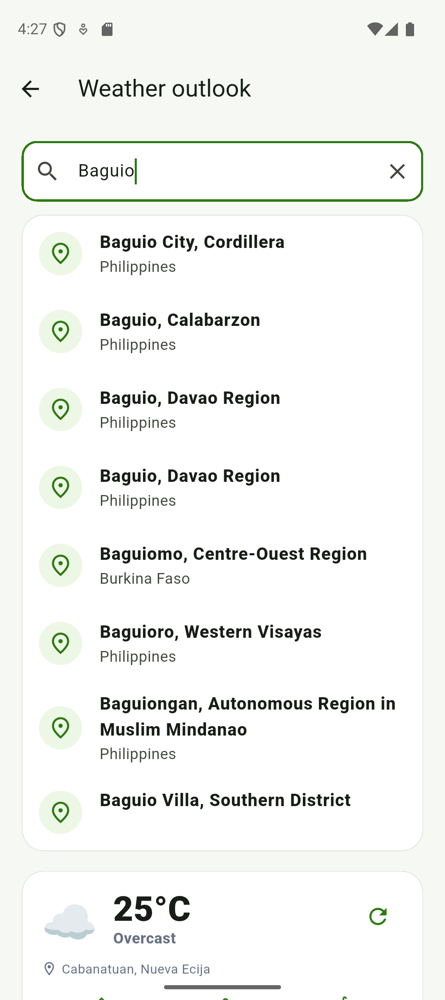
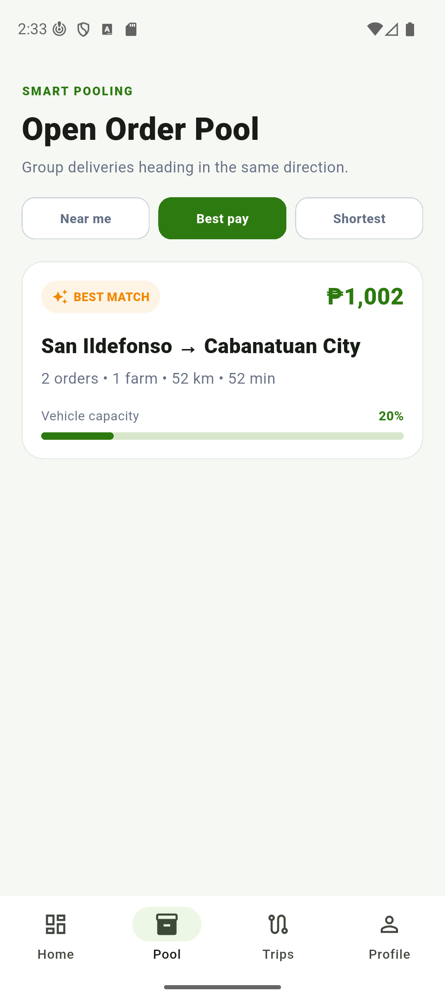
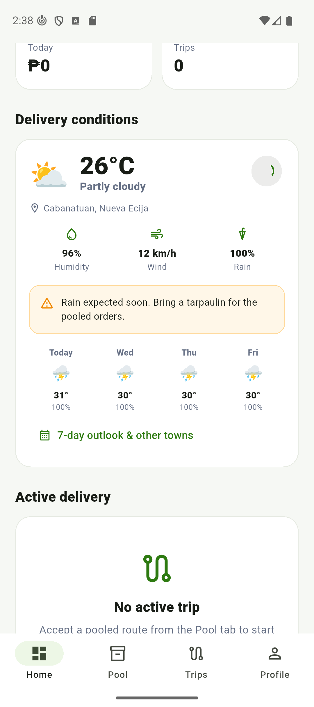
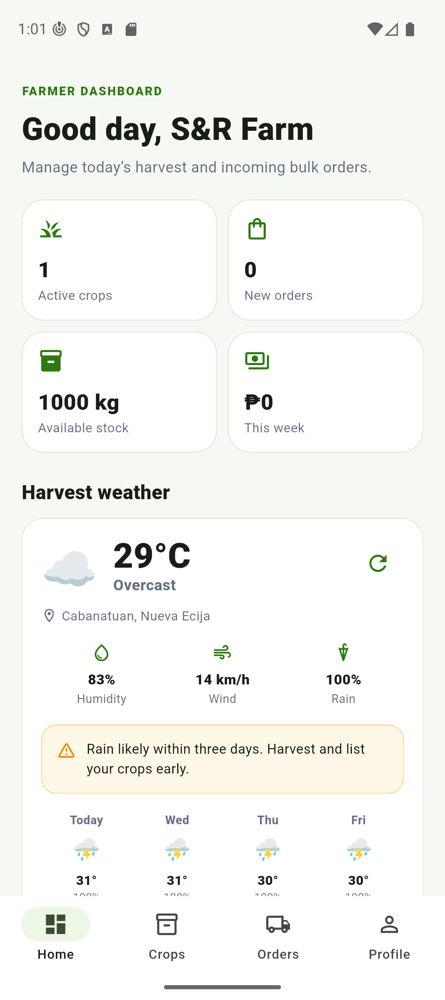

Week 5 · OpenStreetMap routing and geocoding for pooled farm deliveries
The project integrates OpenStreetMap (OSM) and its open service ecosystem. Three OSM-based services are used,
and none of them requires an API key or a registered account. OSRM (router.project-osrm.org) supplies
driving routes together with their distance and estimated travel time. Nominatim
(nominatim.openstreetmap.org) converts coordinates into a readable address. The OSM tile server provides
the map imagery itself.
OSM was chosen because AgriLink is fundamentally a logistics platform. Its core problem is moving bulk produce from farms to buyers, and that is a routing problem. Commercial alternatives such as Google Maps require a billing-enabled API key, whereas the OSM stack is free, openly licensed, and needs no secret stored in the project repository. A fourth public API, Open-Meteo, was also integrated to supply weather information, and is described in Appendix B.
GET https://router.project-osrm.org/route/v1/driving/{lon,lat};{lon,lat};...?overview=full&geometries=geojson
GET https://nominatim.openstreetmap.org/reverse?format=jsonv2&lat=15.4864&lon=120.9673&zoom=18
GET https://tile.openstreetmap.org/{z}/{x}/{y}.png
OSRM expects each coordinate as longitude,latitude, which is the reverse of most other APIs, with the
waypoints joined by semicolons and one waypoint given per stop on the trip. The parameter
overview=full asks the server to return the complete road geometry, so the route can be drawn on the map
rather than only measured.
An actual response from the routing endpoint, abbreviated for space:
{ "code": "Ok",
"routes": [{ "distance": 49426, "duration": 2893.8,
"geometry": { "coordinates": [[120.941396, 15.079411], [120.967269, 15.486488]] } }],
"waypoints": [ { "location": [120.941396, 15.079411], "name": "" },
{ "location": [120.967269, 15.486488], "name": "General Tinio Street" } ] }
The field distance is expressed in metres and duration in seconds, so both are converted
before they are shown to the user. The list under geometry.coordinates arrives as
[longitude, latitude] pairs and has to be flipped into [latitude, longitude] before the
mapping library can draw it.
Farm and buyer coordinates (mobileOrders, Firestore)
→ RouteService.route(stops) ── HTTP GET ──▶ router.project-osrm.org
→ jsonDecode() → RoutePath { points, distanceKm, duration }
→ route polyline on OSM tiles, and "52 km • 52 min" on every Order Pool card
The request is issued with client.get(uri, headers: {'User-Agent': ...}) and a fifteen-second timeout,
since both OSRM and Nominatim require a calling application to identify itself. The response body is never handed to
the interface in its raw form. It is decoded and converted into a typed RoutePath object, which performs
the unit conversions and flips every coordinate pair. The resulting data appears in three places in the application:
the Pooled route map, the distance and estimated time on each Order Pool card, and the address shown in the signup
location picker.
Before this integration, AgriLink measured a delivery as a straight line drawn between the farm and the buyer. On provincial roads that understates the real journey considerably. The route shown in Figure 1 is 52 kilometres of actual road against roughly 45 kilometres of straight line, and that difference is fuel and time the rider is not paid for. The routing API therefore gives the platform three things it could not calculate on its own:
Each way the request can fail is caught separately and given a name through a RouteFailure enumeration,
so that the application knows which problem occurred rather than treating every failure as the same event.
| Requirement | Failure | Detection | Result |
|---|---|---|---|
| Connection issue | No network, host unreachable | SocketException |
Every case degrades to the same straight-line estimate, calculated at an assumed 28 km/h and flagged as an estimate. Failed routes are never cached, so the following refresh tries again. |
| Connection dropped mid-request | ClientException | ||
| Unavailable API | Server down | HTTP 5xx | |
| Rate limited | HTTP 429 | ||
| Server too slow to answer | TimeoutException (15 s) | ||
| No road between the points | empty routes array | ||
| Invalid response | HTML error page where JSON was expected | FormatException | |
| Valid JSON in an unexpected shape | cast failure |
The guiding rule is that a failed lookup should fall back to a usable number instead of an error message, because a rider must never be prevented from seeing a distance. Nominatim failures behave the same way and fall back to the raw latitude and longitude, so the dropped pin remains usable. When there is no connection at all as the application starts, the splash screen offers a retry rather than waiting indefinitely, as shown in Figure 4.
Integrating the OpenStreetMap stack turned AgriLink's pooled delivery feature from an estimate into something a rider can actually trust, because the Order Pool previously measured a route as a straight line, which on provincial roads understates the real trip by several kilometres of unpaid fuel and time. The most difficult part was that OSRM returns its coordinates as longitude followed by latitude, which is the reverse of almost every other API and of the mapping library used to draw the result, so every point has to be flipped between the two conventions and a single missed flip places the entire route in the wrong hemisphere. A second challenge was learning to be a responsible consumer of a free public service, since the pool screen reloads every few seconds and the obvious implementation would have sent a burst of routing requests on every refresh; the requests are therefore resolved one at a time, only for the routes currently visible on screen, and cached by their waypoint list. The most valuable lesson from this activity was that an integration is judged by how it fails rather than by how it succeeds, because the routing service is allowed to be unavailable, and when it is, the application quietly falls back to a straight-line estimate instead of showing a rider an error where a distance should be.
All screenshots were captured on a Pixel 9 emulator running Android 16, against the live APIs.




Multiple API endpoints. Five endpoints are called in total: the OSRM routing endpoint, Nominatim reverse geocoding, the OSM tile server, the Open-Meteo forecast endpoint, and the Open-Meteo geocoding endpoint.
Search and filter. The weather screen searches for any town through the Open-Meteo geocoding endpoint, with the request delayed by 450 milliseconds so that one lookup is sent per pause in typing rather than one per keystroke (Figure 5). The Order Pool can be filtered by Near me, Best pay, or Shortest route (Figure 6).
POST request. OSRM, Nominatim, and Open-Meteo are all read-only services and expose no POST endpoint, so the
condition attached to this item does not apply to them. The application does, however, issue POST requests to the
Firestore REST API, both for documents:runQuery and for creating documents, and to the transactional
email service used by the password-reset feature.
Dynamic refresh without reloading the page. Routes in the Order Pool are resolved after the screen has already
been drawn and are then written into place through setState. The weather card refreshes on a ten-minute
timer, through a refresh button, and by pulling down on the screen. Figure 7 was captured during a refresh: the button
shows a progress indicator while the card continues to display data, and the reading has changed from the previous
figure without the page being rebuilt.
Secondary integration. Open-Meteo supplies current conditions and a seven-day outlook for the coordinates each account pinned during signup, shown on both the Farmer and the Rider dashboard. The numeric WMO weather code returned by the service is mapped to advice specific to the role, so the same thunderstorm tells a farmer to secure stored produce while telling a rider not to accept trips.
Running flutter test executes 64 tests against a mocked HTTP client, so none of them require a network
connection. Twelve of these cover the routing service specifically, including the request URL and its unusual
longitude-first ordering, the parsing of distance and duration, the coordinate flip, the caching behaviour, and every
row of the table in section V. The command flutter analyze reports no issues. No new database collection
was required, because routing reads coordinates that are already stored on the mobileOrders documents.



